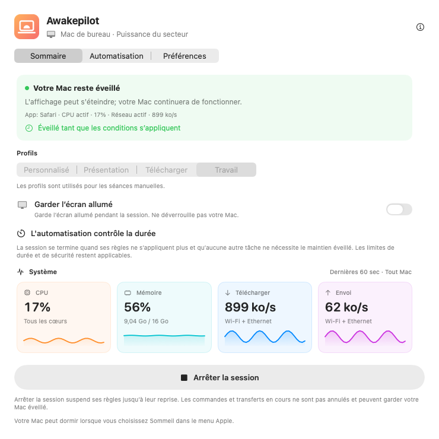
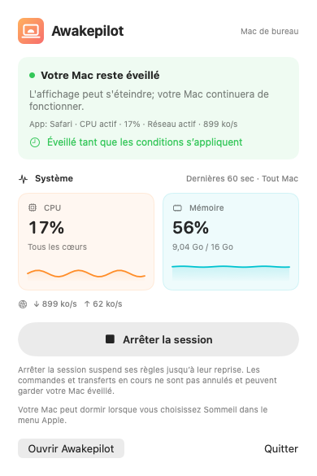
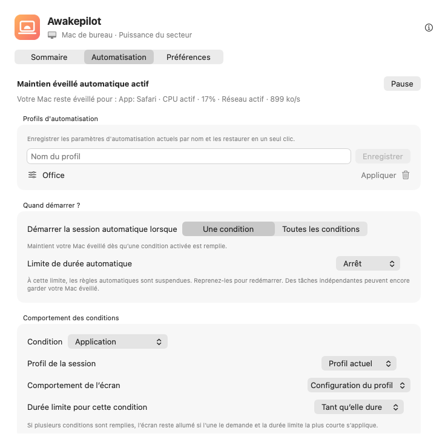

Des sessions flexibles
Maintenez le Mac éveillé sans limite, pendant une durée ou jusqu’à une date et une heure précises.
15 min1 h2 h∞
Évitez la veille automatique pendant les compilations, exports vidéo et gros transferts. Choisissez une durée ou des conditions. Awakepilot cesse de maintenir le Mac éveillé à leur fin, sauf si une autre tâche active en a encore besoin.


Choisissez une durée ou les conditions de démarrage. Quand le maintien en éveil prend fin, le Mac suit ses réglages de veille ; il ne se met pas immédiatement en veille.
Maintenez le Mac éveillé sans limite, pendant une durée ou jusqu’à une date et une heure précises.
Suivez le CPU, la mémoire, les téléchargements et les envois sur des graphiques en direct.
Choisissez ce qu’il faut surveiller. Gardez le Mac éveillé lorsqu’une app est ouverte, qu’un processus tourne ou qu’un disque choisi est connecté.
Respectez l’adaptateur, les seuils de batterie, l’onduleur et les préférences d’affichage.
Maintenez vos disques externes actifs en actualisant régulièrement un petit fichier sur chaque disque inscriptible choisi.
Voyez quand le maintien en éveil a commencé, pourquoi il s’est prolongé et quand il s’est arrêté.

Consultez les apps, processus et conditions qui maintiennent le Mac éveillé. Si les règles ne s’appliquent plus et qu’aucune autre tâche n’en a besoin, les réglages de veille habituels reprennent.
Une app ouverte ne prouve pas qu’une tâche tourne encore. Une baisse du CPU ou du trafic ne confirme pas non plus sa fin.
Choisissez ce qu’Awakepilot surveille, le comportement de l’écran et une durée maximale. Consultez les conditions actives et les changements récents dans l’app.
Démarrez sur le réseau du studio ou le VPN professionnel. Gardez l’écran disponible pour les appels et arrêtez à la limite de sécurité.
Surveillez le processus d’export par son nom et autorisez l’écran à s’éteindre. Le maintien en éveil finit avec le processus, sauf si une autre règle ou tâche en a besoin.
Réagissez au montage d’un disque d’archives, protégez la copie et activez Drive Alive uniquement sur le volume inscriptible choisi.
Démarrez avec une seule condition ou exigez-les toutes. Par exemple : uniquement sur le Wi-Fi du bureau avec un disque externe connecté.
Awakepilot actualise un petit marqueur sur les disques externes inscriptibles choisis. Il n’écrase aucun fichier d’une autre app et supprime son marqueur à la désactivation, même après reconnexion du disque.
Comprenez toujours ce qui se passe. Awakepilot enregistre les transitions utiles sans remplir l’historique de chaque mesure CPU ou réseau.
Suivez l’activité réseau ou un disque de sauvegarde connecté. La règle finit si l’activité reste sous votre seuil ou si le disque est déconnecté.
Surveillez un processus de terminal par son nom ou gardez le Mac éveillé pendant toute une commande.
Appliquez un profil avec écran allumé uniquement pendant la condition de présentation.
Gardez le Mac accessible avec les protections d’alimentation et de durée actives.
Sans compte, publicité, statistiques ni télémétrie. Les réglages restent locaux ; Awakepilot contacte son site pour vérifier les mises à jour et télécharger les paquets officiels.
Lire les détails de confidentialité →Téléchargez la version universelle pour macOS, signée et notariée par Apple.
Glissez dans Applications. Aucun compte ni abonnement requis.